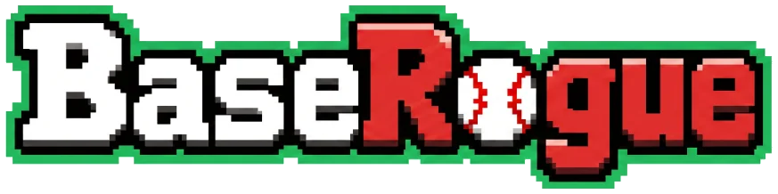

BaseRogue: a free baseball roguelike you play in your browser
Draft real players from 1871 to 2025, roll d100 at-bats and knock out historic pitching rotations on the way to the World Series.
Play BaseRogue free Play on itch.ioWhat is BaseRogue?
BaseRogue is a turn-based baseball roguelike and dice battler. Instead of swinging a bat with a controller, you manage a lineup of real ballplayers and every at-bat is decided by a d100 roll shaped by the ratings of your batter and the pitcher he faces. Hits wear down the rival pitcher; strikeouts and outs wear down your team. Beat the whole rotation and you take the series.
Every run is different: the draft, the map, the events and the rivals change each time, so you build a new team and a new strategy on every attempt.
7,500+ real players, 150 years of baseball
The card pool covers more than 7,500 batters and pitchers from 1871 to 2025, including the Negro Leagues. Each card is built from the player's best seven-season peak with data from the Lahman Baseball Database and Baseball Reference, and adjusted for his era, so a Deadball hitter is measured against his own league and a 2020s slugger against his. Every era has its own card design: cabinet photos for the 1870s, tobacco cards for the Deadball era, woodgrain for the 80s, chrome for today.
Game modes
- Quick Play (roguelike run)
- Draft a nine-man lineup, then climb a season map of series, batting cages, trades, clubhouse rests, luck events, mid-bosses and a World Series boss.
- Story Mode
- Pick a real season from 1901 to 2025 and face that year's actual pitchers, ending against the real champion.
- 162-0 Challenge
- Open card packs, build a 26-man roster and play a full 162-game season against a 32-team league, with an All-Star Game, awards and a managed October postseason.
Strategy that matters
- Era synergies: collect players from the same era (Small Ball, Liveball Sluggers, Bash Brothers, Moneyball, Three True Outcomes and more) to unlock team-wide bonuses.
- Franchise chemistry: teammates from the same club boost each other.
- Focus: a limited charge that rolls two dice and keeps the better one; save it for the at-bat with men on base.
- Platoon matchups: lefty and righty batters perform differently against each pitcher's throwing hand.
- Defensive trials: choose a safe play or a highlight dive when the ball is hit to your fielder.
- Baseball-Dex: a card binder with every player's career stats, awards and links to Baseball Reference.
FAQ
- Is BaseRogue free?
- Yes. No ads, no account, no download. It runs in any modern browser on PC and mobile.
- Are the players real?
- Yes, more than 7,500 real batters and pitchers from 1871 to 2025, Negro Leagues included.
- How does a battle work?
- Each at-bat is a d100 roll. The batter's ratings against the pitcher's set the odds of a walk, strikeout, out, single, double, triple or home run.
- Is it in Spanish?
- Yes, the game is available in English and Spanish.